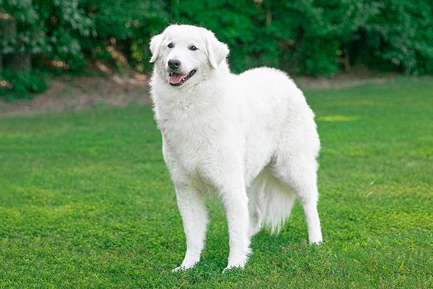
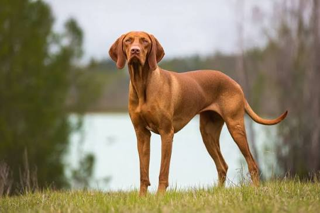
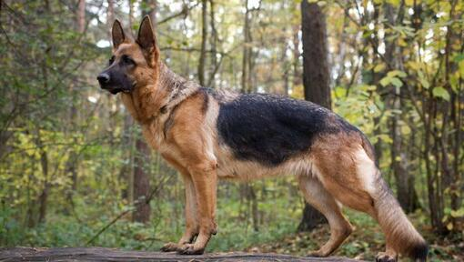
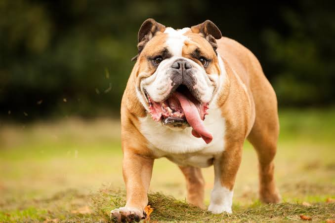

A kuvasz egy nagy termetű, fehér színű kutyafajta. Hűséges, bátor és emellett kiváló házőrző is, de szigorú nevelésre van szüksége.

A vizsla egy közepes termetű, rövid szőrű kutyafajta. Barátságos, intelligens és nagyon mozgékony, emiatt sokat kell vele sétálni, parkokba járni.

A német juhászkutya egy erős, intelligens és könnyen tanítható kutyafajta. Gyakran használják rendőrségi és mentési feladatokra, de családi kutyának is tökéletes lehet.

A tacskó kis termetű, hosszú testű és rövid lábú kutyafajta. Élénk, bátor és kíváncsi, ezért sokszor nagyon határozott természetű.

Az angol bulldog zömök testalkatú, erős és jellegzetes megjelenésű kutya. Általában nyugodt és barátságos, de a meleg időt nehezen viseli.
